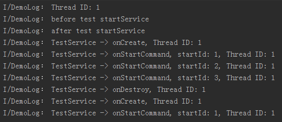

Android中startService的使用及Service生命周期
2015-08-16 分类：Android开发、编程开发、首页精华暂无人评论 来源：iSpring
Android中有两种主要方式使用Service，通过调用Context的startService方法或调用Context的bindService方法，本文只探讨startService的使用，不涉及任何bindService方法调用的情况。
当我们通过调用了Context的startService方法后，我们便启动了Service，通过startService方法启动的Service会一直无限期地运行下去，只有在外部调用Context的stopService或Service内部调用Service的stopSelf方法时，该Service才会停止运行并销毁。
要想使用Service，首先我们要继承自Service，然后重写如下方法:
onCreate, onStartCommand, onBind 和 onDestroy。
这几个方法都是回调方法，都是由Android操作系统在合适的时机调用的，并且需要注意的是这几个回调方法都是在主线程中被调用的。
onCreate: 执行startService方法时，如果Service没有运行的时候会创建该Service并执行Service的onCreate回调方法；如果Service已经处于运行中，那么执行startService方法不会执行Service的onCreate方法。也就是说如果多次执行了Context的startService方法启动Service，Service方法的onCreate方法只会在第一次创建Service的时候调用一次，以后均不会再次调用。我们可以在onCreate方法中完成一些Service初始化相关的操作。
onStartCommand: 在执行了startService方法之后，有可能会调用Service的onCreate方法，在这之后一定会执行Service的onStartCommand回调方法。也就是说，如果多次执行了Context的startService方法，那么Service的onStartCommand方法也会相应的多次调用。onStartCommand方法很重要，我们在该方法中根据传入的Intent参数进行实际的操作，比如会在此处创建一个线程用于下载数据或播放音乐等。
onBind: Service中的onBind方法是抽象方法，所以Service类本身就是抽象类，也就是onBind方法是必须重写的，即使我们用不到。在通过startService使用Service时，我们在重写onBind方法时，只需要将其返回null即可。onBind方法主要是用于给bindService方法调用Service时才会使用到。
onDestroy: 通过startService方法启动的Service会无限期运行，只有当调用了Context的stopService或在Service内部调用stopSelf方法时，Service才会停止运行并销毁，在销毁的时候会执行Service回调函数。
我们为了探究通过startService方法启动的Service的生命周期以验证上面对各个回调函数方法的描述，写了如下的一个测试案例。
首先创建一个服务类TestService，该类继承自Service，代码如下:
package com.ispring.startservicedemo;
import android.app.Service;
import android.content.Intent;
import android.os.IBinder;
import android.util.Log;
public class TestService extends Service {
@Override
public void onCreate() {
Log.i("DemoLog","TestService -> onCreate, Thread ID: " + Thread.currentThread().getId());
super.onCreate();
}
@Override
public int onStartCommand(Intent intent, int flags, int startId) {
Log.i("DemoLog", "TestService -> onStartCommand, startId: " + startId + ", Thread ID: " + Thread.currentThread().getId());
return START_STICKY;
}
@Override
public IBinder onBind(Intent intent) {
Log.i("DemoLog", "TestService -> onBind, Thread ID: " + Thread.currentThread().getId());
return null;
}
@Override
public void onDestroy() {
Log.i("DemoLog", "TestService -> onDestroy, Thread ID: " + Thread.currentThread().getId());
super.onDestroy();
}
}
我们在TestService的各个回调方法中只是简单打印出了相应的信息，并没有做很多复杂的处理操作。
然后我们在Activity中调用该Serivce，Activity中相应的代码如下:
package com.ispring.startservicedemo;
import android.app.Activity;
import android.content.Intent;
import android.os.Bundle;
import android.util.Log;
public class MainActivity extends Activity {
@Override
protected void onCreate(Bundle savedInstanceState) {
super.onCreate(savedInstanceState);
setContentView(R.layout.activity_main);
Log.i("DemoLog", "Thread ID: " + Thread.currentThread().getId());
Log.i("DemoLog", "before test startService");
//连续启动Service
Intent intent1 = new Intent(this, TestService.class);
startService(intent1);
Intent intent2 = new Intent(this, TestService.class);
startService(intent2);
Intent intent3 = new Intent(this, TestService.class);
startService(intent3);
//停止Service
Intent intent4 = new Intent(this, TestService.class);
stopService(intent4);
//再次启动Service
Intent intent5 = new Intent(this, TestService.class);
startService(intent5);
Log.i("DemoLog", "after test startService");
}
}
我们在Activity中，首先连续三次调用了Activity的startService方法以启动Service，然后调用Activity的stopService方法停止Service，然后又通过调用Activity的startService方法启动Service。
运行程序的输出结果如下:

我们分析一下上面的输出结果，首先打印出了主线程的ID是1， 然后我们发现后面所有在回调函数中打印出的执行线程的ID也就是1，这就说明了Service中的各个回调方法是运行在主线程中的。其次我们可以发现在我们连续调用了三次startService方法之后，只触发了一次onCreate回调方法，触发了三次onStartCommand方法，在onStartCommand中我们可以读取到通过startService方法传入的Intent对象，并且这三次的startId都不同，分别是1,2,3，每次调用startService都会自动分配一个startId，startId可以用来区分不同的startService的调用，一般情况下startId都是从1开始计数，以后每次调用startService之后startId自动加一递增。
之后我们又调用了Activity的stopService(intent4)方法用于停止Service，通过输出结果我们发现Service执行了onDestroy方法，一般情况下我们可以在onDestroy方法中执行一些资源释放的操作。执行完onDestroy之后该Service的实例就销毁了。虽然我们之前调用了三次startService方法，但是只要调用一次stopService就可以让运行中的Service停止运行并销毁。
最后我们再次通过startService(intent5)启动Service时，通过输出结果我们发现再次执行了Service的onCreate方法，这说明Service在通过stopService销毁之后重新创建了，并随之再次调用onStartCommand回调方法，并且startId再次从1开始计数。
我们用一张图来概括一下通过startService启动的Service的生命周期：

当Android面临内存匮乏的时候，可能会销毁掉你当前运行的Service，然后待内存充足的时候可以重新创建Service，Service被Android系统强制销毁并再次重建的行为依赖于Service中onStartCommand方法的返回值。我们常用的返回值有三种值，START_NOT_STICKY、START_STICKY和START_REDELIVER_INTENT，这三个值都是Service中的静态常量。
START_NOT_STICKY： 如果返回START_NOT_STICKY，表示当Service运行的进程被Android系统强制杀掉之后，不会重新创建该Service，当然如果在其被杀掉之后一段时间又调用了startService，那么该Service又将被实例化。那什么情境下返回该值比较恰当呢？如果我们某个Service执行的工作被中断几次无关紧要或者对Android内存紧张的情况下需要被杀掉且不会立即重新创建这种行为也可接受，那么我们便可将 onStartCommand的返回值设置为START_NOT_STICKY。举个例子，某个Service需要定时从服务器获取最新数据：通过一个定时器每隔指定的N分钟让定时器启动Service去获取服务端的最新数据。当执行到Service的onStartCommand时，在该方法内再规划一个N分钟后的定时器用于再次启动该Service并开辟一个新的线程去执行网络操作。假设Service在从服务器获取最新数据的过程中被Android系统强制杀掉，Service不会再重新创建，这也没关系，因为再过N分钟定时器就会再次启动该Service并重新获取数据。
START_STICKY： 如果返回START_STICKY，表示Service运行的进程被Android系统强制杀掉之后，Android系统会将该Service依然设置为started状态（即运行状态），但是不再保存onStartCommand方法传入的intent对象，然后Android系统会尝试再次重新创建该Service，并执行onStartCommand回调方法，但是onStartCommand回调方法的Intent参数为null，也就是onStartCommand方法虽然会执行但是获取不到intent信息。如果你的Service可以在任意时刻运行或结束都没什么问题，而且不需要intent信息，那么就可以在onStartCommand方法中返回START_STICKY，比如一个用来播放背景音乐功能的Service就适合返回该值。
START_REDELIVER_INTENT： 如果返回START_REDELIVER_INTENT，表示Service运行的进程被Android系统强制杀掉之后，与返回START_STICKY的情况类似，Android系统会将再次重新创建该Service，并执行onStartCommand回调方法，但是不同的是，Android系统会再次将Service在被杀掉之前最后一次传入onStartCommand方法中的Intent再次保留下来并再次传入到重新创建后的Service的onStartCommand方法中，这样我们就能读取到intent参数。只要返回START_REDELIVER_INTENT，那么onStartCommand重的intent一定不是null。如果我们的Service需要依赖具体的Intent才能运行（需要从Intent中读取相关数据信息等），并且在强制销毁后有必要重新创建运行，那么这样的Service就适合返回START_REDELIVER_INTENT。